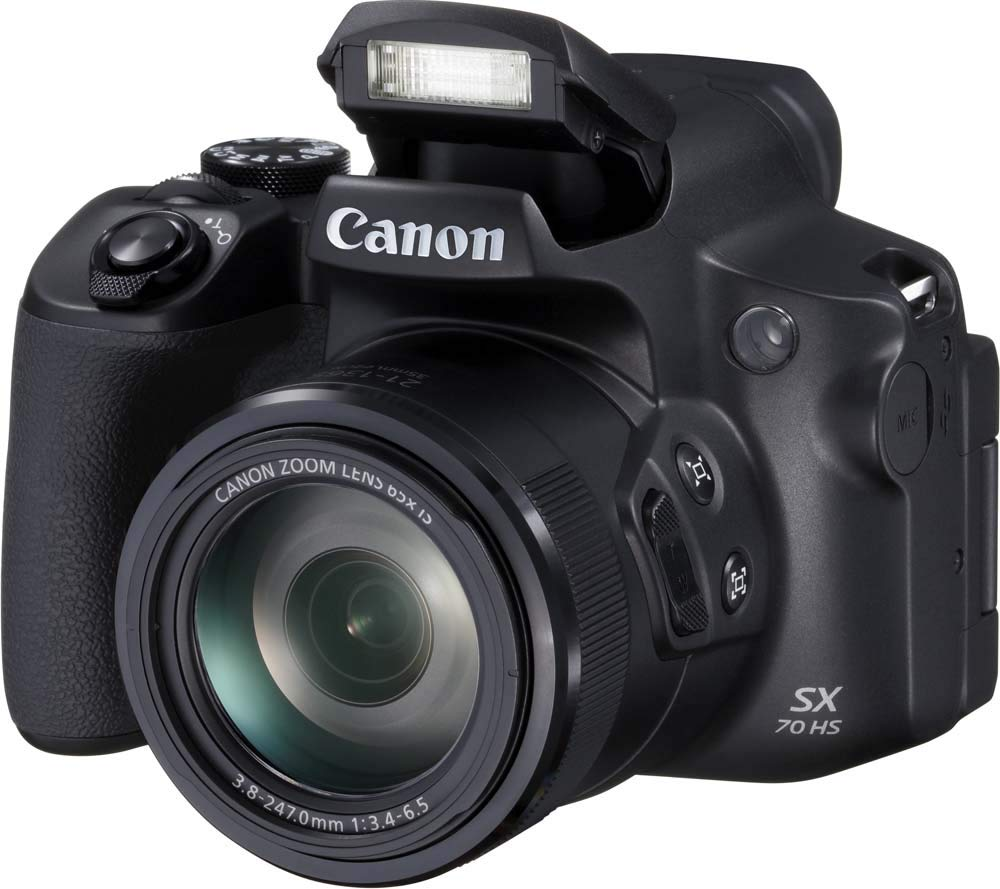
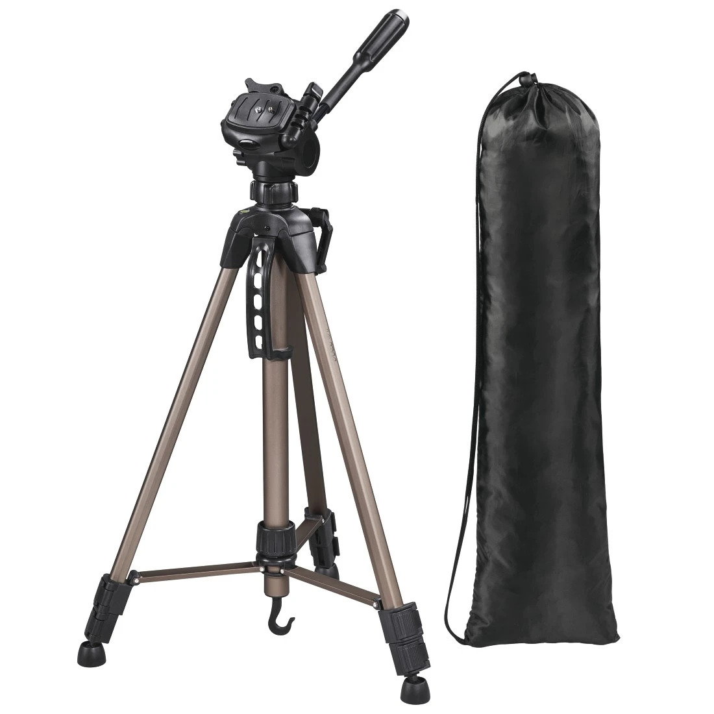
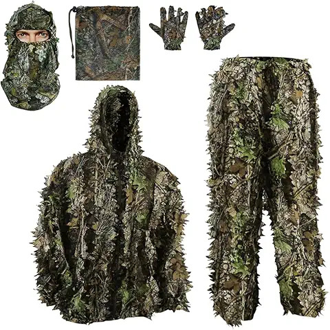

El material que uso en el campo para capturar la fauna de Sierra Morena. Sin grandes presupuestos, con mucha paciencia.

01 — Cámara
Mi cámara principal. Una superzoom compacta que me ha permitido acercarme a la fauna sin molestarla gracias a su potente zoom óptico de 65x. Es una herramienta ideal para empezar en la fotografía de vida salvaje sin gastar demasiado.
No es una cámara profesional, pero con buena luz y paciencia permite sacar resultados sorprendentes. Si estás empezando, es una opción muy recomendable para ver si este mundo te engancha antes de invertir más.
Ideal para principiantes Bajo presupuesto
02 — Trípode
Uso un trípode económico de Amazon. En fotografía de fauna no siempre tienes tiempo de montarlo, pero para sesiones largas desde un hide es imprescindible para mantener la cámara estable y evitar fotos movidas.
No hace falta gastar mucho en esto al principio. Un trípode básico y ligero cumple perfectamente con su función mientras aprendes.
Económico Esencial para el hide03 — Hide
Mi hide es de construcción propia, instalado de forma fija en mi finca. Tener un espacio privado lo cambia todo: los animales se acostumbran a la estructura con el tiempo y pierden el miedo, lo que permite acercamientos que serían imposibles de otro modo.
Es sin duda la pieza más importante de mi equipo. La paciencia y el conocimiento del terreno valen más que cualquier cámara cara.
Hecho a mano Finca privada
04 — Camuflaje
Para moverme por el campo antes de llegar al hide uso un traje de camuflaje. No hace falta que sea caro: uno genérico de Amazon funciona perfectamente para empezar. Lo importante es no destacar frente al entorno natural.
Combinado con movimientos lentos y el viento a favor, este traje marca la diferencia a la hora de no espantar a los animales.
Camuflaje básico Disponible en Amazon